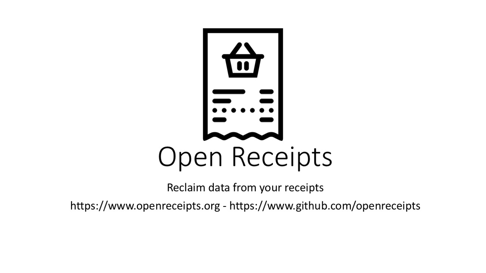
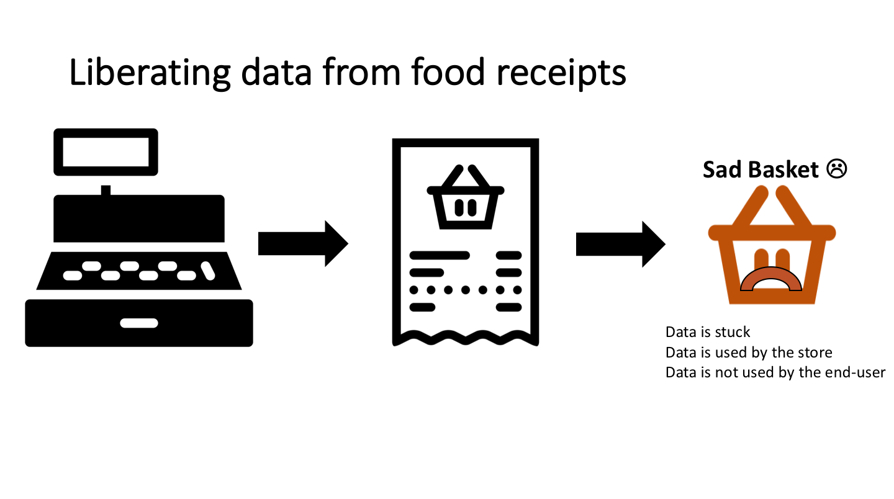
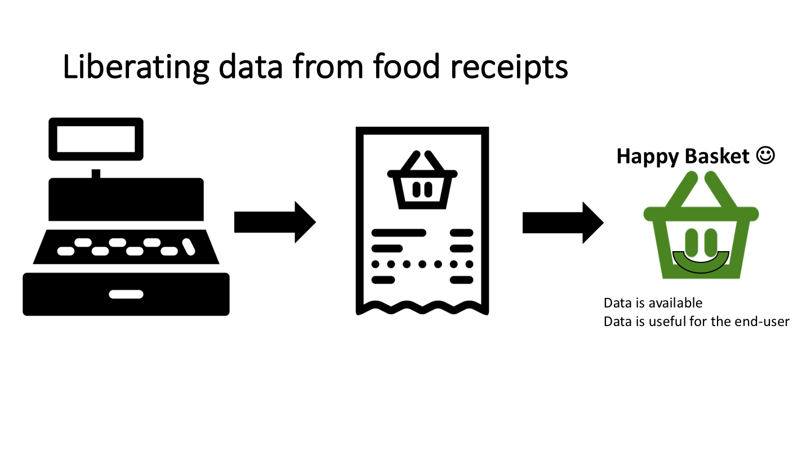
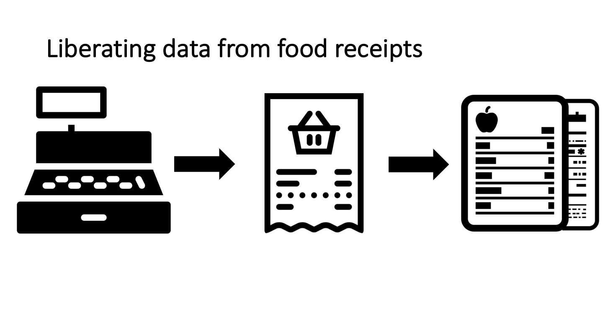
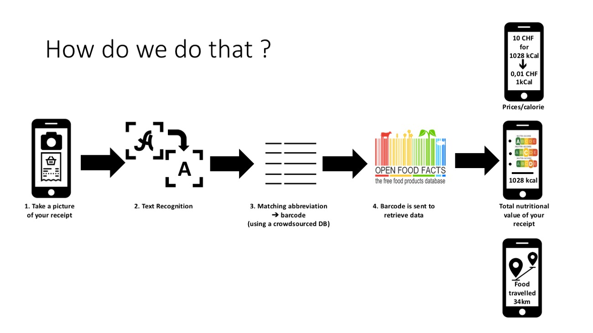

What is Open Receipts ?




How does it work ?

Features
- Gets the barcodes from a food receipt
- Gets the prices from a food receipt
Upload Roadmap
- Crowdsourcing matches between abbreviation and barcode
- Getting GPS coordinates for the scan of the receipt
- Bulk upload of receipts
Recognition Roadmap
Gets the store from a food receipt
Gets the timestamp of the purchase from a food receipt
Gets the location of the purchase store from a food receipt
Visualisation/Export Roadmap
- Export to CSV
- Reproduce the receipt with CSS
- Repartition of nutrients over time (3 lines)
- Price by calorie (scatter plot)